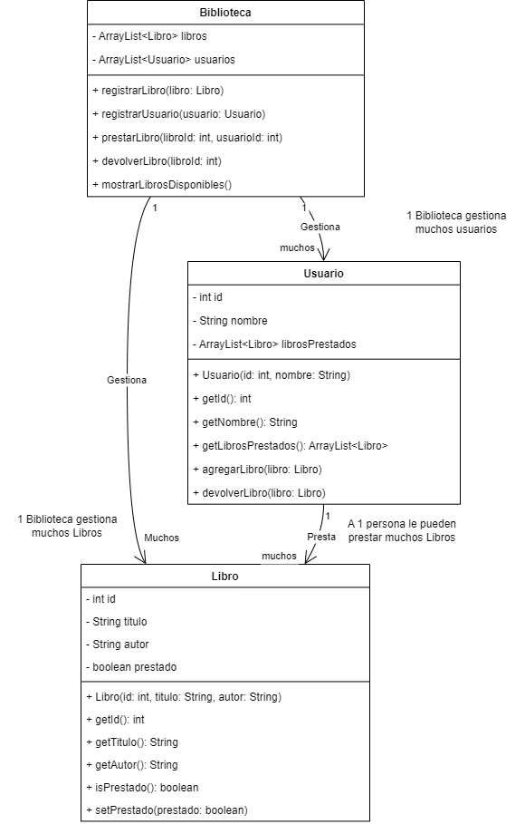
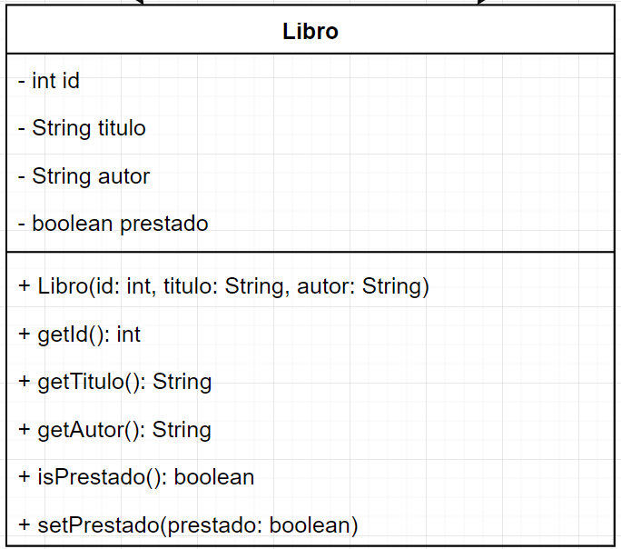
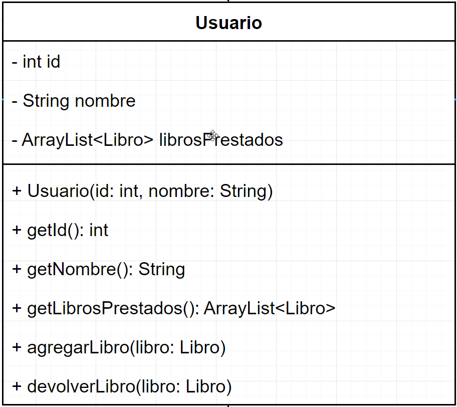
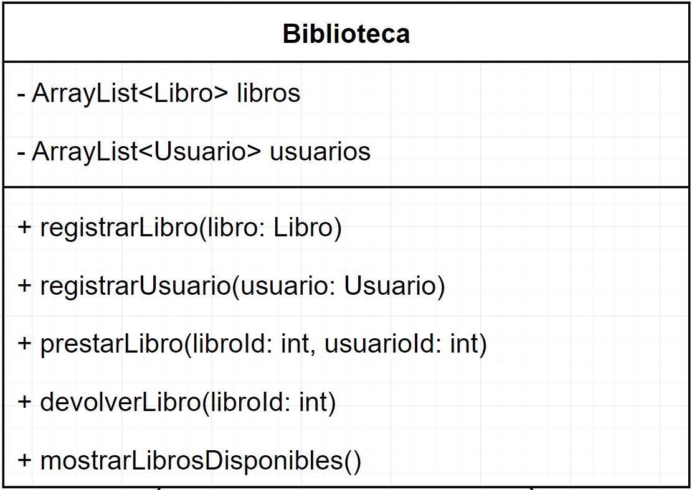

15 Ejercicio Complementario
15.0.1 Enunciado: Sistema de Gestión de Biblioteca
Instrucciones: Diseña y desarrolla un programa en Java que represente un Sistema de Gestión de Biblioteca. El programa debe permitir:
-registrar libros
-usuarios
-gestionar préstamos.
Aplica los conceptos básicos de Programación Orientada a Objetos (POO) que has aprendido en clase. A continuación, se detallan los requerimientos:
Modelado de Clases y Objetos:
Crea tres clases principales:
Libro,UsuarioyBiblioteca.Relaciona las clases para que la biblioteca administre los libros y usuarios, y cada usuario pueda tener varios libros prestados.
Estructura del Programa:
El programa debe comenzar mostrando un menú con las opciones:
Registrar un libro.
Registrar un usuario.
Prestar un libro.
Devolver un libro.
Mostrar el listado de libros disponibles y prestados.
Encapsulamiento:
- Los atributos de las clases deben ser privados y accesibles únicamente a través de métodos
gettersysetters.
- Los atributos de las clases deben ser privados y accesibles únicamente a través de métodos
Constructores:
- Implementa constructores para inicializar los objetos con datos (PARAMETRIZADO) como título del libro, autor, nombre del usuario, etc.
Gestión de Errores (Excepciones):
- Si un usuario intenta prestar un libro que no existe o que ya está prestado, el programa debe mostrar un mensaje de error y continuar funcionando.
Persistencia de Datos:
- Los libros y usuarios registrados deben guardarse en un archivo de texto, y el programa debe cargar estos datos al iniciar.
Colecciones y Arreglos:
- Usa una lista (
ArrayList) para gestionar los libros y usuarios registrados.
- Usa una lista (
PASOS A REALIZAR.
15.0.2 RESUMEN
Vamos a realizar un programa para gestionar una biblioteca, donde debe contener un menú ( lo puedo colocar en el main, o crear una clase y llamarla cuando la necesite), el programa deberá permitir crear usuarios, registrar libros, gestionar préstamos de los libros a los usuarios.
Los datos deberán cargarse al sistema cuando se inice, en caso que algún libro no exista o está prestado deberá presentar una alerta.
Las clases deben ser privadas, pero con un constructor parametrizado para la creación, no para la modificación.
Existen varios libros (necesito un array del objeto Libro que lo maneja BIBLIOTECA).
Existen varios usuarios ( necesito un array del objeto usuario que lo maneja BIBLIOTECA).
Atributos usuario y Métodos usuario
ID , Nombre, LibroPrestado (para saber cual libro se ha prestado al usuario).
getLibrosPrestados(), agregarLibro, devolverLibro
Además el usuario no debe poder modificar información por lo que necesita getter de ID, Nombre. pero no debe modificar
Atributos Libro (yo debo colocar).
ID, Titulo, Autor, Prestado (V o F).
Los métodos de libro que puede observar (get) ID, titulo, Autor, Prestado.
Los que puede modificar (set) setPrestado.
La clase que administra es Biblioteca.
Atributos: Arrays de libro y usuario.
Métodos: registrarLibro() , registrarUsuario() , prestarLibro() , devolverLibro(), mostrarLibrosDisponibles()
15.0.3 DIAGRAMA UML

15.0.4 CODIFICACIÓN
15.0.4.1 Clase Libro
public class Libro {
private static int contadorId = 1; // Atributo estático
private final int id; // ID único, final para no permitir cambios
private String titulo;
private String autor;
private boolean prestado;
public Libro(String titulo, String autor) {
this.id = contadorId++;
this.titulo = titulo;
this.autor = autor;
this.prestado = false;
}
public int getId() {
return id;
}
public String getTitulo() {
return titulo;
}
public void setTitulo(String titulo) {
this.titulo = titulo;
}
public String getAutor() {
return autor;
}
public void setAutor(String autor) {
this.autor = autor;
}
public boolean isPrestado() {
return prestado;
}
public void setPrestado(boolean prestado) {
this.prestado = prestado;
}
@Override
public String toString() {
return "ID: " + id + ", Título: " + titulo + ", Autor: " + autor + ", Prestado: " + (prestado ? "Sí" : "No");
}
}
15.0.4.2 Clase Usuario

import java.util.ArrayList;
public class Usuario {
private static int contadorId = 1; // Atributo estático
private final int id; // ID único, final para no permitir cambios
private String nombre;
private ArrayList<Libro> librosPrestados;
public Usuario(String nombre) {
this.id = contadorId++;
this.nombre = nombre;
this.librosPrestados = new ArrayList<>();
}
public int getId() {
return id;
}
public String getNombre() {
return nombre;
}
public void setNombre(String nombre) {
this.nombre = nombre;
}
public void agregarLibroPrestado(Libro libro) {
librosPrestados.add(libro);
}
public void devolverLibro(Libro libro) {
librosPrestados.remove(libro);
}
public ArrayList<Libro> getLibrosPrestados() {
return librosPrestados;
}
@Override
public String toString() {
return "ID: " + id + ", Nombre: " + nombre;
}
}15.0.4.3 Clase Biblioteca
import java.util.ArrayList;
public class Biblioteca {
private ArrayList<Libro> libros;
private ArrayList<Usuario> usuarios;
// Constructor
public Biblioteca() {
this.libros = new ArrayList<>();
this.usuarios = new ArrayList<>();
}
// Método para agregar un nuevo libro
public void agregarLibro(String titulo, String autor) {
Libro libro = new Libro(titulo, autor);
libros.add(libro);
System.out.println("Libro agregado: " + libro.getTitulo() + " con ID: " + libro.getId());
}
// Método para registrar un usuario
public void registrarUsuario(String nombre) {
Usuario usuario = new Usuario(nombre);
usuarios.add(usuario);
System.out.println("Usuario registrado: " + usuario.getNombre() + " con ID: " + usuario.getId());
}
// Método para prestar un libro
public void prestarLibro(int idUsuario, int idLibro) {
Usuario usuario = buscarUsuario(idUsuario);
Libro libro = buscarLibro(idLibro);
if (usuario != null && libro != null) {
if (!libro.isPrestado()) {
libro.setPrestado(true);
usuario.agregarLibroPrestado(libro);
System.out.println("El libro '" + libro.getTitulo() + "' ha sido prestado a " + usuario.getNombre());
} else {
System.out.println("El libro ya está prestado.");
}
} else {
System.out.println("Usuario o libro no encontrado.");
}
}
// Método para devolver un libro
public void devolverLibro(int idUsuario, int idLibro) {
Usuario usuario = buscarUsuario(idUsuario);
Libro libro = buscarLibro(idLibro);
if (usuario != null && libro != null) {
if (libro.isPrestado()) {
libro.setPrestado(false);
usuario.devolverLibro(libro);
System.out.println("El libro '" + libro.getTitulo() + "' ha sido devuelto por " + usuario.getNombre());
} else {
System.out.println("El libro no estaba prestado.");
}
} else {
System.out.println("Usuario o libro no encontrado.");
}
}
// Método para mostrar los libros disponibles
public void mostrarLibrosDisponibles() {
System.out.println("\n--- Lista de libros disponibles ---");
boolean hayLibros = false;
for (Libro libro : libros) {
if (!libro.isPrestado()) {
System.out.println("ID: " + libro.getId() + " - Título: " + libro.getTitulo() + " - Autor: " + libro.getAutor());
hayLibros = true;
}
}
if (!hayLibros) {
System.out.println(" No hay libros disponibles.");
}
}
// Método para mostrar usuarios disponibles
public void mostrarUsuariosDisponibles() {
System.out.println("\n--- Lista de usuarios disponibles ---");
if (usuarios.isEmpty()) {
System.out.println(" No hay usuarios registrados.");
} else {
for (Usuario usuario : usuarios) {
System.out.println("ID: " + usuario.getId() + " - Nombre: " + usuario.getNombre());
}
}
}
// Método para mostrar los usuarios con libros prestados
public void mostrarUsuariosConLibrosPrestados() {
System.out.println("\n--- Lista de usuarios con libros prestados ---");
boolean hayUsuariosConLibros = false;
for (Usuario usuario : usuarios) {
if (!usuario.getLibrosPrestados().isEmpty()) {
System.out.println(" ID: " + usuario.getId() + " - Nombre: " + usuario.getNombre() +
" - Libros prestados: " + usuario.getLibrosPrestados().size());
hayUsuariosConLibros = true;
}
}
if (!hayUsuariosConLibros) {
System.out.println("No hay usuarios con libros prestados.");
}
}
// Método para mostrar los libros prestados a un usuario específico
public void mostrarLibrosPrestados(int idUsuario) {
Usuario usuario = buscarUsuario(idUsuario);
if (usuario != null) {
System.out.println("\n--- Libros prestados al usuario " + usuario.getNombre() + " ---");
if (!usuario.getLibrosPrestados().isEmpty()) {
for (Libro libro : usuario.getLibrosPrestados()) {
System.out.println("ID: " + libro.getId() + " - Título: " + libro.getTitulo() + " - Autor: " + libro.getAutor());
}
} else {
System.out.println(" El usuario no tiene libros prestados.");
}
} else {
System.out.println("Usuario no encontrado.");
}
}
// Método para buscar un libro
private Libro buscarLibro(int idLibro) {
for (Libro libro : libros) {
if (libro.getId() == idLibro) {
return libro;
}
}
return null;
}
// Método para buscar un usuario
private Usuario buscarUsuario(int idUsuario) {
for (Usuario usuario : usuarios) {
if (usuario.getId() == idUsuario) {
return usuario;
}
}
return null;
}
}
15.0.4.4 Clase Main
import java.util.InputMismatchException;
import java.util.Scanner;
public class Main {
public static void main(String[] args) {
Biblioteca biblioteca = new Biblioteca();
Scanner scanner = new Scanner(System.in);
int opcion = 0;
do {
System.out.println("\n--- Menú de la Biblioteca ---");
System.out.println("1. Agregar libro");
System.out.println("2. Registrar usuario");
System.out.println("3. Prestar libro");
System.out.println("4. Devolver libro");
System.out.println("5. Mostrar libros disponibles");
System.out.println("6. Mostrar usuarios con libros prestados");
System.out.println("7. Salir");
System.out.print("Ingrese una opción: ");
try {
opcion = scanner.nextInt();
scanner.nextLine(); // Limpiar el buffer de entrada
} catch (InputMismatchException e) {
System.out.println("Opción no válida, debe ser un número.");
scanner.nextLine(); // Limpiar el buffer de entrada
continue;
}
switch (opcion) {
case 1:
System.out.print("Ingrese el título del libro: ");
String titulo = scanner.nextLine();
System.out.print("Ingrese el autor del libro: ");
String autor = scanner.nextLine();
biblioteca.agregarLibro(titulo, autor);
break;
case 2:
System.out.print("Ingrese el nombre del usuario: ");
String nombre = scanner.nextLine();
biblioteca.registrarUsuario(nombre);
System.out.println(" Usuario registrado exitosamente.");
break;
case 3:
System.out.println("\n--- Lista de usuarios ---");
biblioteca.mostrarUsuariosDisponibles();
try {
System.out.print("\nIngrese el ID del usuario que tomará el libro: ");
int idUsuarioPrestar = scanner.nextInt();
scanner.nextLine(); // Limpiar el buffer de entrada
System.out.println("\n--- Lista de libros disponibles ---");
biblioteca.mostrarLibrosDisponibles();
System.out.print("\nIngrese el ID del libro a prestar: ");
int idLibroPrestar = scanner.nextInt();
scanner.nextLine(); // Limpiar el buffer de entrada
biblioteca.prestarLibro(idUsuarioPrestar, idLibroPrestar);
System.out.println("Libro prestado exitosamente.");
} catch (InputMismatchException e) {
System.out.println("Error: El ID debe ser un número.");
scanner.nextLine(); // Limpiar el buffer de entrada
}
break;
case 4:
System.out.println("\n--- Lista de usuarios con libros prestados ---");
biblioteca.mostrarUsuariosConLibrosPrestados();
try {
System.out.print("\nIngrese el ID del usuario que devolverá el libro: ");
int idUsuarioDevolver = scanner.nextInt();
scanner.nextLine(); // Limpiar el buffer de entrada
System.out.println("\n--- Lista de libros prestados ---");
biblioteca.mostrarLibrosPrestados(idUsuarioDevolver);
System.out.print("\nIngrese el ID del libro a devolver: ");
int idLibroDevolver = scanner.nextInt();
scanner.nextLine(); // Limpiar el buffer de entrada
biblioteca.devolverLibro(idUsuarioDevolver, idLibroDevolver);
System.out.println("Libro devuelto exitosamente.");
} catch (InputMismatchException e) {
System.out.println("Error: El ID debe ser un número.");
scanner.nextLine(); // Limpiar el buffer de entrada
}
break;
case 5:
System.out.println("\n--- Lista de libros disponibles ---");
biblioteca.mostrarLibrosDisponibles();
break;
case 6:
biblioteca.mostrarUsuariosConLibrosPrestados();
break;
case 7:
System.out.println("Saliendo...");
break;
default:
System.out.println("Opción no válida.");
}
} while (opcion != 7);
scanner.close();
}
}15.0.5 Conceptos Aplicados
Modelamiento de Clases y Objetos: Se modelaron las clases
Libro,UsuarioyBiblioteca.Encapsulamiento: Los atributos están privados y solo se acceden mediante getters y setters.
Constructores: Los objetos
LibroyUsuariose crean con un constructor.Getters y Setters: Se accede y modifica la información de los objetos a través de getters y setters.
Relaciones entre Clases:
Bibliotecatiene una relación de agregación conUsuarioyLibro.Usuariotiene una relación de composición con la lista de libros prestados.
Excepciones: Aunque no se manejan excepciones explícitas, se pueden añadir para controlar la entrada de datos.
Persistencia de Datos: Se podría extender la persistencia a un archivo, pero actualmente se gestiona en memoria.
Arreglos y Colecciones: Se utilizan ArrayList para la lista de usuarios y la lista de libros.
Estructura General de un Programa: La clase
Mainorquesta la lógica principal de la aplicación.Lectura y Escritura por Consola: Los mensajes se muestran en la consola para facilitar la interacción con el usuario.